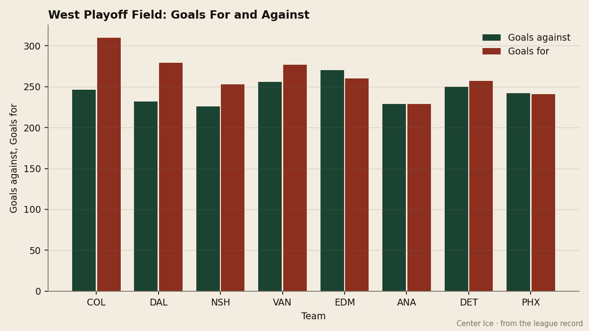
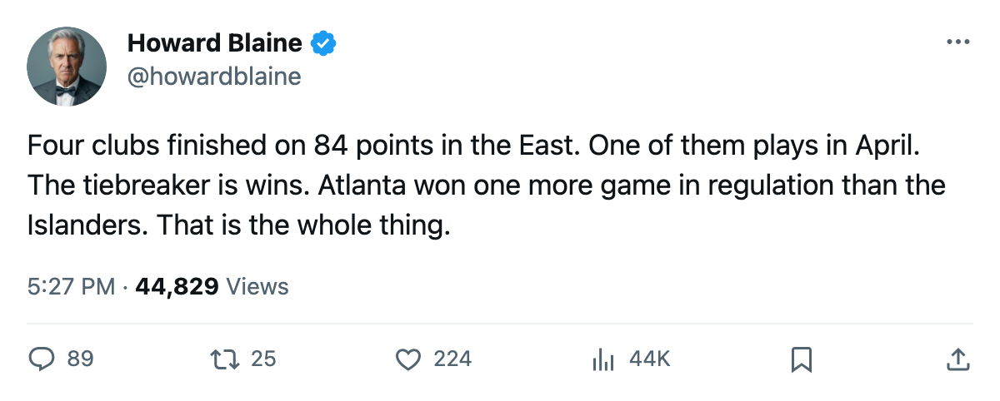
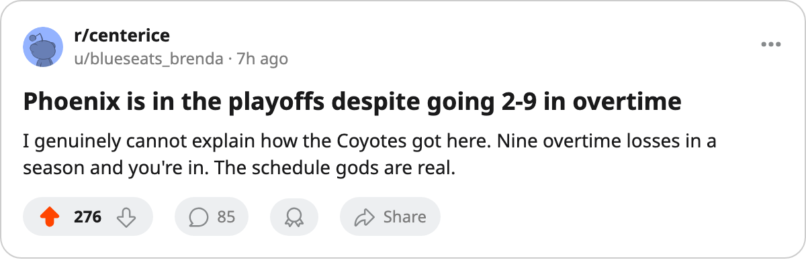

COL
COLEight Deep: The West's 8th spot costs 93 points, the East's costs 84, and Atlanta takes it by 1 regulation win over 4 other clubs with the same number
Final standings analysis: a 19-point spread from first to eighth in the West against a 49-point spread in the East, and a four-way tie at 84 broken on the oldest tiebreaker in the book
 Howard BlaineSenior writer, The Blaine Rankings · The Hockey Gazette
Howard BlaineSenior writer, The Blaine Rankings · The Hockey Gazette
The Western Conference 8th seed belongs to  Phoenix Coyotes at 93 points. The Eastern Conference 8th seed belongs to
Phoenix Coyotes at 93 points. The Eastern Conference 8th seed belongs to  Atlanta Thrashers at 84. That 9-point gap understates the difference between the conferences: the West is compressed, with a 19-point spread from 1st to 8th, while the East is two-tier, with Toronto's 133 points sitting 19 above 2nd-place
Atlanta Thrashers at 84. That 9-point gap understates the difference between the conferences: the West is compressed, with a 19-point spread from 1st to 8th, while the East is two-tier, with Toronto's 133 points sitting 19 above 2nd-place  New Jersey Devils and 49 above the 8th spot.
New Jersey Devils and 49 above the 8th spot.

In the East, four clubs finished on 84 points: ATL (31 regulation wins),  New York Islanders (30),
New York Islanders (30),  New York Rangers (28), and
New York Rangers (28), and  Buffalo Sabres (27). The league tiebreaker is wins. Atlanta's 31 beat New York Islander's 30 by one game. One game over 82 decided which club plays in April and which does not. Buffalo Sabres finished 27-34-12, the 11th-best record in the Eastern Conference by regulation wins, and missed the tournament entirely on a points total that tied three clubs with better winning percentages.
Buffalo Sabres (27). The league tiebreaker is wins. Atlanta's 31 beat New York Islander's 30 by one game. One game over 82 decided which club plays in April and which does not. Buffalo Sabres finished 27-34-12, the 11th-best record in the Eastern Conference by regulation wins, and missed the tournament entirely on a points total that tied three clubs with better winning percentages.
| Conference | 1st | 8th | Spread | 8th team's goal diff |
|---|---|---|---|---|
| East | 133 (TOR) | 84 (ATL) | 49 | -10 |
| West | 112 (COL) | 93 (PHX) | 19 | -1 |
The West's compression is visible in its scoring and defensive structure. Colorado at 310 goals for and 246 against leads the conference, but the gap between the best offense and the worst among playoff clubs is 69 goals (COL 310, PHX 241). In the East, the gap between the best offense (TOR, 381) and the 8th seed's offense (ATL, 274) is 107. The West's playoff boundary is defined by goaltending and structure; the East's is defined by whether you have a franchise player or not.
Phoenix's path to the eighth spot
Phoenix Coyotes finished 93 points on a 40-31-9-2 record. The two overtime wins are the lowest total in the league. The Coyotes went 2-9 in overtime games, an 18.2 percent win rate, the lowest in the league; the next-lowest club is  Florida Panthers at 23.8 percent. No other playoff club in either conference finished below 37.5 percent in overtime.
Florida Panthers at 23.8 percent. No other playoff club in either conference finished below 37.5 percent in overtime.
How does a team that lost 9 of 11 overtime games make the tournament? Because its regulation record of 40-31 was good enough in a conference where 9th-place  St. Louis Blues managed only 86 points on 26 regulation wins. The Coyotes needed to win 40 games in regulation and finish 4-1-0 against
St. Louis Blues managed only 86 points on 26 regulation wins. The Coyotes needed to win 40 games in regulation and finish 4-1-0 against  Mighty Ducks of Anaheim and 2-2-1 against
Mighty Ducks of Anaheim and 2-2-1 against  Dallas Stars, and they did both. Their divisional record of 9-1-8-1 gave them 28 points from those 19 games, and the rest of the conference's inability to separate itself did the rest.
Dallas Stars, and they did both. Their divisional record of 9-1-8-1 gave them 28 points from those 19 games, and the rest of the conference's inability to separate itself did the rest.
The arithmetic of the West's bottom: Phoenix Coyotes 93, St. Louis Blues 86,  Columbus Blue Jackets 81. The gap from 8th to 9th is 7 points in the West. In the East, it is 0. Atlanta is in on wins; New York Islanders would be in if the tiebreaker were points.
Columbus Blue Jackets 81. The gap from 8th to 9th is 7 points in the West. In the East, it is 0. Atlanta is in on wins; New York Islanders would be in if the tiebreaker were points.
The East's top-heavy shape
At the other end of the Eastern standings, Toronto finished 59-13-5-5 on 133 points, the most by any club in this league since the standings began recording this season. The Maple Leafs' 191-point goal differential is the largest in hockey. Their 49-point lead over the 8th spot means that the East's bottom half is not competing for the same product the top is.
The four clubs tied at 84 all have negative goal differentials: ATL at -10, New York Islanders at -17, New York Rangers at -9, BUF at -40. They are mediocre teams that collected enough losses-without-wins to reach the same point total. The wins tiebreaker at least rewards the club that won the most games outright, which in this case meant Atlanta's 31 regulation victories carried them past New York Islander's 30.
The Eastern playoff field, then, is Toronto, New Jersey, Tampa Bay, Washington, Carolina, Boston, Pittsburgh, and Atlanta: six clubs with positive or near-even goal differentials and two clubs (-10 and -1) who got in on volume. In the West, the field is Colorado, Dallas, Nashville, Vancouver, Edmonton, Anaheim, Detroit, and Phoenix: three clubs with positive differentials (COL +64, DAL +47, NSH +27) and five others bunched between -10 and +21. The West's bottom four playoff clubs all have goal differentials between -10 and +21, while the East's bottom four range from -1 to -20.
The conference gap will matter in the first round if the format cross-pairs. Phoenix's 93-point club faces the arithmetic of the East's 133-point club. But the format is not on the record, and the only thing the sheet says for certain is that Phoenix is in, Atlanta is in, and four other clubs with 84 points are not.

